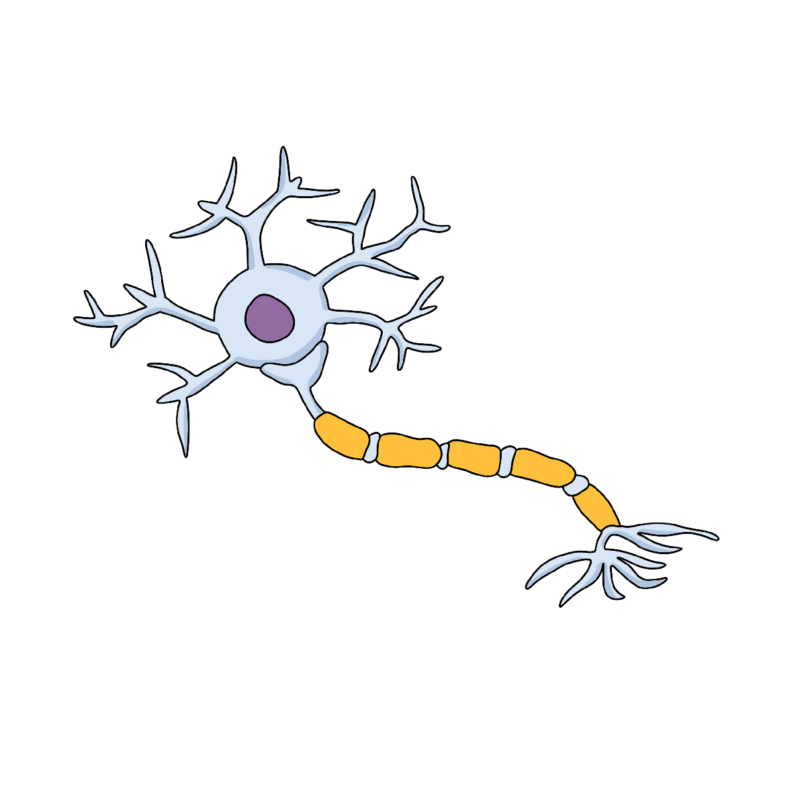

Simulação da Interação Dopamina - Frequência de Interações

Nível de Dopamina
Frequência de Disparos
Informações
Esta simulação demonstra como a dopamina modula a frequência de
interações neurais e vice-versa. Ajuste a frequência de disparos
e observe o efeito no nível de dopamina e na atividade do neurônio.